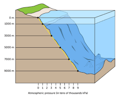

Abstract
Underwater vehicles are a vital part of progressing the discovery of the ocean as they allow humans to reach parts of the ocean that are too deep, too high pressure or too remote to be visited. This article examines how underwater vehicles can be optimised for deep sea operation by looking at four areas of design: hull shape and drag, pressure, propulsion and biometric design. Overall optimising a vehicle means balancing competing demands so that the best design depends on the mission.
Introduction
The ocean covers around 70% of the Earth's surface and yet only 5% of the ocean has been explored with 27.3% of the global seafloor being mapped [Bristol Aquarium, 2026]. This makes the ocean a massive point of interest for humanity, but we cannot explore further without the help of technology. As depth increases underwater vehicles become necessary for sea exploration as they are able to overcome; human physical limitations, extreme pressures, hazardous/ remote environments and carry out research without disturbing surrounding wildlife. In this paper underwater vehicles are separated into the different aspects that make them a versatile research tool.
Drag and Hull Shape
Hull design is the engineering of a watercraft’s shape to control how it interacts and navigates efficiently through water. Depending on the vessel's function hull design needs to balance between hydrostatics (buoyancy and stability) and hydrodynamics (speed, drag and how effective it is at cutting through water). A hull shape of an underwater vehicle can be split into the nose, middle, tail and propulsion with most AUVs (autonomous underwater vehicles) being designed based on the Myring hull profile equations [Myring D.F, 1976] which are known to produce low drag [Joung Tae-Hwan, 2012]. Drag on underwater vehicles occurs when water is flowing against the vessel. This difference creates a backward force called pressure drag. As the vessel speeds up, it experiences a greater drag force due to it colliding with more water particles per second. This can create problems on longer duration expeditions as more energy would be required to push the water particles aside, making hull design even more important. The majority of modern day underwater vehicles are designed to be shaped like a torpedo/ teardrop (rounded blunt nose with a smoothly tapered tail). This is because it offers the lowest hydrodynamic drag and highest energy efficiency for long distance or high speed cruising. However, having a more streamlined shape lowers pressure drag but adds surface area and friction so engineers have to choose the best shape to compromise on for efficiency.
Pressure
Underwater pressure is the force that is exerted from all directions against an object. The greater the depth the heavier the column of water above becomes, causing the pressure to increase rapidly. For every 10m you go down, the pressure increases by one atmosphere (kPa) [NOAA, 2026], meaning during deep sea exploration the pressure reaches hundreds of atmospheres which can crush standard vessels if not built to withstand it. To survive the hydrostatic pressures forces underwater vehicles typically use spherical shapes to distribute compressive forces evenly, alongside high strength materials such as titanium due to their high strength to weight ratio and resistance to deformation. This was proven in 2023 when Oceangate’s Titan sub dive to 3,800m went tragically wrong and five lives were lost. One of the key reasons the Titan sub failed was its carbon fiber hull which had damage built up over repeated dives, from not using the spherical titanium design typical for deep sea vehicles. Therefore the crushing pressure of the deep was distributed unequally causing the sub to implode [BBC, 2024].

Propulsion
To travel through the ocean, underwater vehicles rely on some form of propulsion, with propellers being the most widely used choice. This is because they are simple, reliable, cheap and easy to seal against pressure in low depths. A propeller's role is to push water backwards, and by Newton’s Third Law (every action force, there is an equal and opposite reaction force) the vehicle moves forwards. The propeller creates its thrust by using curved blades that act as rotating wings to create a pressure difference, pulling water in from the front and driving a high speed stream out the back. Engineers have and are trying to emulate a fish’s scale and body shape due to their better suited ability for sliding through the water then submarines. However, MIT points out that fish-like swimming needs complex linkages and sophisticated robotic design so propellers remain standard [MIT, 2008].
Biomimetics
Biomimetic design is vital in underwater vehicles as in deep sea it is important to not damage or disturb the surrounding wildlife, for the quality of research. Biomimetic design is the process of using nature inspired engineering to solve human challenges or protect wildlife. An example of the use of biomimetic design in an underwater vehicle is shark skin inspired boundary layer on a vessel. Sharks are covered in tiny tooth-like scales called denticles that overlap in precise patterns that channels water smoothly across the body. This breaks up turbulence and reduces drag, allowing sharks to swim faster and quieter. This is useful for underwater vehicles in long battery powered missions as reducing drag by a few percent would save vast amounts of energy. Another biomimetic design used in underwater vehicles is Jellyfish jet inspired propulsion as they are one of the most efficient marine animals on the planet when considering the power to speed and weight ratio [University of Southampton, 2021]. Robots use flexible ribs forming a bell to mimic the swimming pattern of a jelly fish and produce jets of fluid to propel the vessel through the water. However prototypes remain small and slow; one untethered soft robotic jellyfish reached only around 0.5 cm/s, far from the performance of current underwater vehicles [Cheng Tingyu, 2019].
Conclusion
Going forward underwater vehicles are a necessity for discovering more of the ocean as they provide opportunities that would not be available for humans. The deeper the operation the more specialised and equipped the vessels need to be to overcome problems such as pressure, efficiency and environment. Overtime engineers have found many ways to create solutions from; altering the shape, using specific materials or copying sea creature attributes. Each with its own purpose and each better from some tasks more than others.
References
- [Bristol Aquarium, 2026] How Much of the Ocean Has Been Discovered?.
Available at: Link
(Accessed: 15th October 2026).
Peer assessed: No - [Myring D.F, 1976] A Theoretical Study of Body Drag in Subcritical Axisymmetric Flow
Available at: Link
(Accessed: 15th October 2026).
Peer assessed: No
- [Joung Tae-Hwan, 2012] Shape optimization of an autonomous underwater vehicle with a ducted propeller using computational fluid dynamics analysis
Available at: Link
(Accessed: 15th October 2026).
Peer assessed: Yes
- [NOAA, 2026] How does pressure change with ocean depth?
Available at: Link
(Accessed: 15th October 2026).
Peer assessed: No
- [BBC, 2024] Titan sub disaster: Five key questions that remain
Available at: Link
(Accessed: 15th October 2026).
Peer assessed: No
- [MIT, 2008] Why do submarines move more like torpedoes than fish?
Available at: Link
(Accessed: 15th October 2026).
Peer assessed: No
- University of Southampton, 2021] Squid-inspired robot swims with nature’s most efficient marine animals
Available at: Link
(Accessed: 20th October 2026).
Peer assessed: No
- [Cheng Tingyu, 2019]
Available at: Link
(Accessed: 20th October 2026).
Peer assessed: Yes